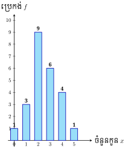
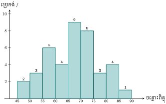
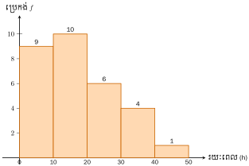

វត្ថុបំណង
- រៀបចំទិន្នន័យដាក់ក្នុងតារាងបំណែងចែកប្រេកង់
- បកស្រាយទិន្នន័យជាក្រាប
- រកមធ្យម ម៉ូត និងមេដ្យាននៃទិន្នន័យមិនផ្តុំជាថ្នាក់ ។
1. បំណែងចែកប្រេកង់
1.1. បំណែងចែកប្រេកង់នៃទិន្នន័យមិនផ្តុំជាថ្នាក់
ឧទាហរណ៍ ៖ ការស្រង់ចំនួនកូនក្នុងចំណោម 24 គ្រួសារគេបានទិន្នន័យដូចខាងក្រោម ៖
2 0 1 2 4 3 1 2
2 1 3 4 3 3 2 2
3 2 5 3 2 2 4 4
ទិន្នន័យខាងលើនេះឋិតនៅរប៉ាត់រប៉ាយ ។ ដូច្នេះវិធីមួយដែលអាចឱ្យយើងងាយយល់បាន ដំបូងគេត្រូវរៀបចំទិន្នន័យតាមលំដាប់នៃតម្លៃ និងរាប់ចំនួនដងដែលកើតមានឡើងចំពោះតម្លៃនៃតួនីមួយៗ ដាក់ក្នុងតារាងមួយហៅថា តារាងបំណែងចែកប្រេកង់ ។
ចំនួនកូនដែលគ្រួសារនីមួយៗមានតាងដោយ \(\displaystyle x\) ហើយចំនួនដងដែលកើតមានឡើងលើតម្លៃនីមួយៗហៅថា ប្រេកង់តាងដោយ \(\displaystyle f\) ។
តារាងបំណែងចែកប្រេកង់
| ចំនួនកូន | របាប់ចំនួនដង | ប្រេកង់ |
| 0 | / | 1 |
| 1 | /// | 3 |
| 2 | HIIII / | 9 |
| 3 | HI | 6 |
| 4 | //// | 4 |
| 5 | / | 1 |
| ប្រេកង់សរុប | 24 | |
និយមន័យ
តារាងបំណែងចែកប្រេកង់ គឺជាការរៀបចំទិន្នន័យដាក់ក្នុងតារាងតាមលំដាប់នៃតម្លៃនិងទៅតាមចំនួនដងចំពោះតម្លៃនីមួយៗ ដែលកើតមានឡើង ។
គ្រូសួរសិស្ស 38 នាក់អំពីចំណង់ចំណូលចិត្តដែលសិស្សម្នាក់ៗ ចង់រៀនភាសាបរទេសមានអង់គ្លេស E បារាំង F រុស្ស៊ី R ចិន C ជប៉ុន J និងកូរ៉េ K បានចម្លើយដូចខាងក្រោម ៖
E E R F J E E C F E J C F J E C K J E
F K E J E C J C E F E E F J C F E K E
- ក. សង់តារាងបំណែងចែកប្រេកង់នៃភាសាបរទេសដែលសិស្សចង់រៀន
- ខ. តើភាសានីមួយៗដែលសិស្សចង់រៀនមានចំនួនប៉ុន្មាននាក់ ?
ក. តារាងបំណែងចែកប្រេកង់
| ភាសាបរទេស | របាប់ចំនួនដង | ប្រេកង់ \(\displaystyle f\) |
| អង់គ្លេស E | HIIII HI //// | 14 |
| បារាំង F | HI // | 7 |
| រុស្ស៊ី R | / | 1 |
| ជប៉ុន J | HI // | 7 |
| ចិន C | HI / | 6 |
| កូរ៉េ K | /// | 3 |
| ប្រេកង់សរុប | 38 | |
ខ. តាមតារាងបំណែងចែកប្រេកង់ យើងឃើញថាសិស្សរៀនភាសាអង់គ្លេសមាន 14 នាក់ បារាំង 7 នាក់ រុស្ស៊ី 1 នាក់ ជប៉ុន 7 នាក់ ចិន 6 នាក់ និងកូរ៉េ 3 នាក់ ។
ទិន្នន័យចំពោះចំនួនថ្ងៃដែលសិស្ស 45 នាក់នៅក្នុងថ្នាក់រៀនមួយត្រូវបានអវត្តមានពីសាលាក្នុងមួយឆ្នាំសិក្សាមានដូចខាងក្រោម៖
4 3 0 5 2 2 0 1 6 2 7 6 3 3 0
4 4 2 0 4 0 2 1 5 1 6 3 2 5
2 2 4 0 6 3 2 0 1 7 5 0 1 2 3
សង់តារាងបំណែងចែកប្រេកង់ ។
1.2. បំណែងចែកប្រេកង់នៃទិន្នន័យផ្តុំជាថ្នាក់
ឧទាហរណ៍ ៖ ខាងក្រោមនេះជាពិន្ទុភាសាអង់គ្លេសនៃសិស្ស 40 នាក់ ។
| 46 | 58 | 65 | 70 | 75 | 78 | 82 | 85 |
| 48 | 59 | 66 | 71 | 75 | 79 | 83 | 86 |
| 51 | 59 | 66 | 72 | 76 | 80 | 83 | 87 |
| 52 | 60 | 66 | 72 | 76 | 80 | 84 | 88 |
| 55 | 64 | 68 | 74 | 77 | 81 | 85 | 88 |
ដើម្បីសង់តារាងបំណែងចែកប្រេកង់នៃទិន្នន័យផ្តុំជាថ្នាក់គេត្រូវ ៖
- រកផលសងរវាងតម្លៃធំបំផុតនិងតម្លៃតូចបំផុតនៃទិន្នន័យ ៖ \(\displaystyle 88 - 46 = 42\)
- កំណត់ប្រវែងចន្លោះថ្នាក់នីមួយៗ ឧបមាថាយកប្រវែង 5
- រកចំនួនថ្នាក់ ៖ \(\displaystyle \frac{42}{5} = 8.4 \approx 9\) ថ្នាក់
- រៀបចំចន្លោះថ្នាក់ចាប់ពី 45–50, 50–55, ..., 85–90
តារាងបំណែងចែកប្រេកង់ផ្តុំជាថ្នាក់
| ថ្នាក់ | ចន្លោះថ្នាក់ | ប្រេកង់ \(\displaystyle f\) |
| 1 | 45–50 | 2 |
| 2 | 50–55 | 3 |
| 3 | 55–60 | 6 |
| 4 | 60–65 | 4 |
| 5 | 65–70 | 9 |
| 6 | 70–75 | 8 |
| 7 | 75–80 | 3 |
| 8 | 80–85 | 4 |
| 9 | 85–90 | 1 |
| ប្រេកង់សរុប | 40 | |
2. ការតាងក្រាប
ឧទាហរណ៍ 1 ៖ បកស្រាយទិន្នន័យនៃចំនួនកូនក្នុងគ្រួសារដែលបានពិភាក្សានៅខាងដើមដូចបានបង្ហាញក្នុងតារាងបំណែងចែកប្រេកង់ខាងក្រោមនេះ៖
| ចំនួនកូន \(\displaystyle x\) | ប្រេកង់ |
| 0 | 1 |
| 1 | 3 |
| 2 | 9 |
| 3 | 6 |
| 4 | 4 |
| 5 | 1 |

ចំពោះទិន្នន័យមិនផ្តុំជាថ្នាក់ គេអាចសង់ក្រាបតាមរបៀបដូចខាងលើ ។ នៅក្នុងប្លង់កូអរដោនេ គេដៅតម្លៃនីមួយៗនៃទិន្នន័យនៅលើអ័ក្សអាប់ស៊ីសនិងប្រេកង់ \(\displaystyle f\) នៅលើអ័ក្សអរដោនេរួចសង់សសរដែលតម្លៃនីមួយៗនៃទិន្នន័យជាផ្ចិតនៃបាតនិងប្រេកង់ជាកម្ពស់នៃសសរ ហើយក្រាបដែលសង់បានហៅថា ក្រាបសសរ ។
ឧទាហរណ៍ 2 ៖ ចំពោះទិន្នន័យផ្តុំជាថ្នាក់ដែលបានពិភាក្សានៅខាងដើម

គេអាចបកស្រាយទិន្នន័យខាងដើមជាក្រាបដូចខាងស្តាំ ។ នៅក្នុងប្លង់កូអរដោនេ គេដៅតម្លៃនៃចន្លោះថ្នាក់នីមួយៗលើអ័ក្សអាប់ស៊ីសនិងប្រេកង់នៅលើអ័ក្សអរដោនេ ។ សង់ក្រាបសសរជាប់ៗគ្នាដែលមានបាតជាប្រវែងចន្លោះថ្នាក់និងកម្ពស់ជាប្រេកង់នៃថ្នាក់នីមួយៗ ។ ក្រាបដែលសង់បានហៅថា អ៊ីស្តូក្រាម ។
ទិន្នន័យខាងក្រោមនេះជារយៈពេលនៃការធ្វើតេស្តធាតុផ្សំអេឡិចត្រូនិច 30 ដែលមិនបានជោគជ័យ ហើយរយៈពេលចំពោះការមិនបានជោគជ័យគិតជាម៉ោង (h) ។
| 1.2 | 21.0 | 34.7 | 13.2 | 3.6 | 14.7 |
| 31.0 | 17.1 | 22.1 | 16.4 | 21.2 | 15.2 |
| 11.3 | 6.8 | 2.7 | 31.2 | 9.0 | 6.8 |
| 23.7 | 16.3 | 30.0 | 28.6 | 19.0 | 29.0 |
| 4.4 | 44.3 | 18.5 | 5.3 | 5.5 | 10.0 |
- ក. រៀបចំទិន្នន័យតាមលំដាប់ផ្គុំជាថ្នាក់ក្នុងតារាងបំណែងចែកប្រេកង់ដែលថ្នាក់នីមួយៗ មានប្រវែងចន្លោះ \(\displaystyle 10\text{ h}\) ដោយចាប់ផ្តើមពី 0 ។
- ខ. បកស្រាយទិន្នន័យនេះជា អ៊ីស្តូក្រាម ។
ក. រៀបចំទិន្នន័យដាក់ក្នុងតារាងបំណែងចែកប្រេកង់
| ថ្នាក់ | ប្រេកង់ \(\displaystyle f\) |
| 0–10 | 9 |
| 10–20 | 10 |
| 20–30 | 6 |
| 30–40 | 4 |
| 40–50 | 1 |
ខ. បកស្រាយទិន្នន័យនេះជា អ៊ីស្តូក្រាម ៖

3. មធ្យម មេដ្យាន និងម៉ូត
3.1. មធ្យម
មធ្យមនៃទិន្នន័យតាងដោយ \(\displaystyle \bar{x}\) ៖
ដែល \(\displaystyle N = \sum f_i\) ជាចំនួនទិន្នន័យសរុប ។
3.2. មេដ្យាន
មេដ្យាន (\(\displaystyle M_e\)) គឺជាតម្លៃកណ្តាលនៃទិន្នន័យដែលបានតម្រៀបតាមលំដាប់កើន ៖
- បើ \(\displaystyle N\) ជាចំនួនសេស ៖ \(\displaystyle M_e\) គឺជាតម្លៃនៃតួទី \(\displaystyle \frac{N+1}{2}\)
- បើ \(\displaystyle N\) ជាចំនួនគូ ៖ \(\displaystyle M_e\) គឺជាមធ្យមភាគនៃតួទី \(\displaystyle \frac{N}{2}\) និង \(\displaystyle \frac{N}{2} + 1\) ។
3.3. ម៉ូត
ម៉ូត (\(\displaystyle M_o\)) គឺជាតម្លៃនៃទិន្នន័យដែលមានប្រេកង់ធំជាងគេបំផុត (កើតមានឡើងច្រើនដងជាងគេ) ។
លំហាត់
គេបានសួរគ្រូបង្រៀននៅសាលាមួយដើម្បីបញ្ជាក់ចំនួនម៉ោងជាមធ្យមដែលគាត់បានចំណាយលើការកែកិច្ចការរបស់សិស្សក្នុងថ្ងៃនីមួយៗ ៖
6 4 3 1 2 2 3 1 4 1 2 5 3 2 2 3 3 1 2 2 3 1 4 2 4 5 - ក. រៀបចំទិន្នន័យដាក់ក្នុងតារាងបំណែងចែកប្រេកង់ ។
- ខ. តើមានគ្រូបង្រៀនចំនួនប៉ុន្មាននាក់ដែលបានឆ្លើយក្នុងការស្ទង់មតិនេះ ?
- គ. រកចំនួនម៉ោងដែលបានចំណាយច្រើនជាងគេ ។
- ឃ. រកចំនួនម៉ោងរួមដែលគ្រូភាគច្រើនបានចំណាយ ។
មើលដំណោះស្រាយ
ដំណោះស្រាយ
- ក.
តារាងបំណែងចែកប្រេកង់ ៖
ចំនួនម៉ោង (\(\displaystyle x\)) របាប់ចំនួនដង ប្រេកង់ (\(\displaystyle f\)) 1 HI 5 2 HI /// 8 3 HI / 6 4 //// 4 5 // 2 6 / 1 សរុប 26 - ខ. ចំនួនគ្រូបង្រៀនដែលបានឆ្លើយក្នុងការស្ទង់មតិ ៖
ផលបូកប្រេកង់សរុប \(\displaystyle N = 5 + 8 + 6 + 4 + 2 + 1 = 26\) នាក់ ។ - គ. ចំនួនម៉ោងដែលបានចំណាយច្រើនជាងគេ ៖
តម្លៃអតិបរមានៃម៉ោងគឺ \(\displaystyle 6\text{ ម៉ោង}\) (មានគ្រូ 1 នាក់ចំណាយ) ។ - ឃ. ចំនួនម៉ោងរួមដែលគ្រូភាគច្រើនបានចំណាយ (ម៉ូត \(\displaystyle M_o\)) ៖
ប្រេកង់ខ្ពស់ជាងគេគឺ 8 ដែលត្រូវនឹង \(\displaystyle 2\text{ ម៉ោង}\) ។ ដូចនេះគ្រូភាគច្រើនបានចំណាយ \(\displaystyle 2\text{ ម៉ោង}\) ក្នុងការកែកិច្ចការសិស្ស ។
គេបានត្រួតពិនិត្យផ្លែប៉ោម 100 កេស ដែលបាននាំចូលពីប្រទេស A ហើយចំនួនផ្លែប៉ោមស្អុយបានកត់ត្រាដូចខាងក្រោម៖
ផ្លែប៉ោមស្អុយ 0 1 2 3 4 5 6 7 8 9 ចំនួនកេស 4 9 12 26 22 15 5 3 3 1 គេក៏បានត្រួតពិនិត្យផ្លែប៉ោម 100 កេសទៀតដែលបាននាំចូលពីប្រទេស B ហើយចំនួនផ្លែប៉ោមស្អុយបានកត់ត្រាដូចខាងក្រោម៖
ផ្លែប៉ោមស្អុយ 0 1 2 3 4 5 6 7 8 ចំនួនកេស 51 30 8 4 1 2 2 1 1 - ក. រកចំនួនផ្លែប៉ោមស្អុយច្រើនបំផុតចំពោះការនាំចូលនីមួយៗ ។
- ខ. រកចំនួនផ្លែប៉ោមស្អុយទាំងអស់ចំពោះការនាំចូលនីមួយៗ ។
មើលដំណោះស្រាយ
ដំណោះស្រាយ
- ក.
ចំនួនផ្លែប៉ោមស្អុយច្រើនបំផុតក្នុងមួយកេស ៖
- ប្រទេស A ៖ ចំនួនផ្លែប៉ោមស្អុយច្រើនបំផុតក្នុង 1 កេស គឺ \(\displaystyle 9\text{ ផ្លែ}\) (មាន 1 កេស) ។
- ប្រទេស B ៖ ចំនួនផ្លែប៉ោមស្អុយច្រើនបំផុតក្នុង 1 កេស គឺ \(\displaystyle 8\text{ ផ្លែ}\) (មាន 1 កេស) ។
- ខ.
ចំនួនផ្លែប៉ោមស្អុយទាំងអស់ចំពោះការនាំចូលនីមួយៗ ៖
ប្រទេស A ៖
\[\begin{aligned} \text{សរុប} &= 0(4) + 1(9) + 2(12) + 3(26) + 4(22) + 5(15) + 6(5) + 7(3) + 8(3) + 9(1) \\ &= 0 + 9 + 24 + 78 + 88 + 75 + 30 + 21 + 24 + 9 = 358\text{ ផ្លែ} \end{aligned}\]ប្រទេស B ៖
\[\begin{aligned} \text{សរុប} &= 0(51) + 1(30) + 2(8) + 3(4) + 4(1) + 5(2) + 6(2) + 7(1) + 8(1) \\ &= 0 + 30 + 16 + 12 + 4 + 10 + 12 + 7 + 8 = 99\text{ ផ្លែ} \end{aligned}\]
ទិន្នន័យខាងក្រោមនេះបង្ហាញពីអាយុរបស់គ្រូបង្រៀនគិតជាឆ្នាំ នៅក្នុងសាលាមួយ ៖
30 53 54 59 42 45 48 33 61 41 49 36 50 43 52 45 46 52 31 53 37 54 60 51 61 47 34 56 42 47 31 58 57 36 45 50 40 59 48 60 49 45 38 33 39 44 57 45 57 46 - ក. រៀបចំទិន្នន័យនេះតាមលំដាប់ផ្គុំជាថ្នាក់ដាក់ក្នុងតារាងបំណែងចែកប្រេកង់ដែលថ្នាក់នីមួយៗ មានប្រវែងចន្លោះស្មើនឹង 5 ។
- ខ. តើគ្រូបង្រៀនដែលមានអាយុតិចជាង 50 ឆ្នាំមានចំនួនប៉ុន្មាននាក់ ?
- គ. សង់អ៊ីស្តូក្រាមដើម្បីតាងទិន្នន័យនេះ ។
មើលដំណោះស្រាយ
ដំណោះស្រាយ
- ក.
តារាងបំណែងចែកប្រេកង់ (ប្រវែងចន្លោះ 5 គិតពី 30 ដល់ 65) ៖
ថ្នាក់ ចន្លោះអាយុ ប្រេកង់ (\(\displaystyle f\)) 1 30–35 6 2 35–40 5 3 40–45 6 4 45–50 13 5 50–55 9 6 55–60 7 7 60–65 4 សរុប 50 - ខ.
ចំនួនគ្រូបង្រៀនដែលមានអាយុតិចជាង 50 ឆ្នាំ ៖
បូកប្រេកង់នៃ 4 ថ្នាក់ដំបូង (30–35, 35–40, 40–45, 45–50) ៖\[6 + 5 + 6 + 13 = 30\text{ នាក់}\] - គ. អ៊ីស្តូក្រាម ៖
នៅលើអ័ក្សដេក ដៅចន្លោះអាយុ 30, 35, 40, 45, 50, 55, 60, 65 ហើយលើអ័ក្សឈរ ដៅប្រេកង់ពី 0 ដល់ 14 ។ សង់ចតុកោណកែងជាប់ៗគ្នាដែលមានកម្ពស់រៀងគ្នា 6, 5, 6, 13, 9, 7, 4 ។
ទិន្នន័យខាងក្រោមនេះបង្ហាញពីប្រាក់ចំណាយគិតជាម៉ឺនរៀល លើសេវាភ្លើងអគ្គិសនីប្រចាំខែរបស់អតិថិជន ៖
ប្រាក់ចំណាយ (ម៉ឺនរៀល) 10–15 15–20 20–25 25–30 30–35 35–40 40–45 ចំនួនអតិថិជន (គិតជាគ្រួសារ) 32 40 25 12 5 4 2 - ក. សង់អ៊ីស្តូក្រាមតាងទិន្នន័យនេះ
- ខ. តើមានអតិថិជនប៉ុន្មានគ្រួសារដែលប្រើអគ្គិសនីក្នុងមួយខែអស់យ៉ាងតិច \(\displaystyle 300~000\text{ ៛}\) ?
មើលដំណោះស្រាយ
ដំណោះស្រាយ
- ក. អ៊ីស្តូក្រាម ៖
អ័ក្សអាប់ស៊ីស \(\displaystyle Ox\) តាងប្រាក់ចំណាយជាម៉ឺនរៀល (10, 15, 20, 25, 30, 35, 40, 45) ហើយអ័ក្សអរដោនេ \(\displaystyle Oy\) តាងចំនួនគ្រួសារ (ពី 0 ដល់ 45) ។ សង់សសរចតុកោណកែងជាប់គ្នាដែលមានកម្ពស់រៀងគ្នា 32, 40, 25, 12, 5, 4, 2 ។ - ខ.
អតិថិជនដែលប្រើអស់យ៉ាងតិច \(\displaystyle 300~000\text{ ៛}\) (\(\displaystyle 30\text{ ម៉ឺនរៀល}\)) ៖
ត្រូវនឹងចន្លោះចាប់ពី 30–35, 35–40 និង 40–45 ៖\[5 + 4 + 2 = 11\text{ គ្រួសារ}\]
តារាងខាងក្រោមនេះ បង្ហាញពីប្រាក់ចំណូលប្រចាំសប្តាហ៍គិតជាម៉ឺនរៀលនៃអាជីវករលក់ដូរនៅក្នុងផ្សារមួយ ៖
ប្រាក់ចំណូលប្រចាំសប្តាហ៍ ចំនួនអាជីវករលក់ដូរ 80–85 4 85–90 6 90–95 8 95–100 16 100–105 20 105–110 6 110–115 8 - ក. តើអាជីវករលក់ដូរទាំងអស់មានចំនួនប៉ុន្មាននាក់?
- ខ. តើមានអាជីវករប៉ុន្មាននាក់ដែលរកប្រាក់បានតិចជាង 100 ម៉ឺនរៀលក្នុងមួយសប្តាហ៍ ?
- គ. សង់អ៊ីស្តូក្រាមតាងទិន្នន័យនេះ ។
មើលដំណោះស្រាយ
ដំណោះស្រាយ
- ក.
ចំនួនអាជីវករលក់ដូរទាំងអស់ ៖
\[N = 4 + 6 + 8 + 16 + 20 + 6 + 8 = 68\text{ នាក់}\] - ខ.
ចំនួនអាជីវករដែលរកប្រាក់បានតិចជាង 100 ម៉ឺនរៀល ៖
បូកប្រេកង់នៃថ្នាក់ 80–85, 85–90, 90–95, 95–100 ៖\[4 + 6 + 8 + 16 = 34\text{ នាក់}\] - គ. អ៊ីស្តូក្រាម ៖
សង់អ័ក្សដេកដោយបែងចែកចន្លោះពី 80 ដល់ 115 ដោយមានជំហាន 5 និងអ័ក្សឈរពី 0 ដល់ 22 ។ សង់ចតុកោណកែងជាប់គ្នាដែលមានកម្ពស់រៀងគ្នា 4, 6, 8, 16, 20, 6, 8 ។
ទិន្នន័យខាងក្រោមនេះជាលទ្ធផលនៃការធ្វើតេស្តភាសាអង់គ្លេសក្នុងចំណោមបេក្ខជន 28 នាក់ ៖
69 72 56 68 62 61 58 57 43 66 53 45 72 64 46 50 61 59 52 63 54 62 61 55 52 58 64 63 - ក. រៀបចំទិន្នន័យតាមលំដាប់ដោយផ្តុំជា 7 ថ្នាក់ដាក់ក្នុងតារាងបំណែងចែកប្រេកង់ ដោយចាប់ផ្តើមពី 40 ។
- ខ. បកស្រាយទិន្នន័យនេះជា អ៊ីស្តូក្រាម ។
- គ. តើសិស្សដែលបានពិន្ទុយ៉ាងច្រើនត្រឹម 60 ពិន្ទុមានចំនួនប៉ុន្មាននាក់ ?
មើលដំណោះស្រាយ
ដំណោះស្រាយ
- ក.
តារាងបំណែងចែកប្រេកង់ 7 ថ្នាក់ (ប្រវែងចន្លោះ 5) ៖
ថ្នាក់ ចន្លោះពិន្ទុ ទិន្នន័យ ប្រេកង់ (\(\displaystyle f\)) 1 40–45 43 1 2 45–50 45, 46 2 3 50–55 50, 52, 52, 53, 54 5 4 55–60 55, 56, 57, 58, 58, 59 6 5 60–65 61, 61, 61, 62, 62, 63, 63, 64, 64 9 6 65–70 66, 68, 69 3 7 70–75 72, 72 2 សរុប 28 - ខ. អ៊ីស្តូក្រាម ៖
អ័ក្សដេកតាងចន្លោះពិន្ទុ (40, 45, 50, 55, 60, 65, 70, 75) និងអ័ក្សឈរតាងប្រេកង់ (0 ដល់ 10) ។ សង់សសរជាប់ៗគ្នាដែលមានកម្ពស់រៀងគ្នា 1, 2, 5, 6, 9, 3, 2 ។ - គ.
ចំនួនសិស្សដែលបានពិន្ទុយ៉ាងច្រើនត្រឹម 60 ពិន្ទុ (\(\displaystyle \le 60\)) ៖
បូកប្រេកង់ពីថ្នាក់ទី 1 ដល់ថ្នាក់ទី 4 ៖\[1 + 2 + 5 + 6 = 14\text{ នាក់}\]
កំណត់ មធ្យម មេដ្យាន និងម៉ូតនៃទិន្នន័យខាងក្រោម៖
- ក. 8 11 14 13 14 9 15
- ខ. 88 93 85 98 102 98 93 104 102 98
- គ.
\(\displaystyle x\) 4 6 8 10 12 \(\displaystyle f\) 2 10 6 3 1 - ឃ.
\(\displaystyle x\) 0 1 2 3 4 \(\displaystyle f\) 45 32 14 6 3
មើលដំណោះស្រាយ
ដំណោះស្រាយ
- ក.
តម្រៀបទិន្នន័យតាមលំដាប់កើន ៖ \(\displaystyle 8, 9, 11, 13, 14, 14, 15\) (\(\displaystyle N = 7\))
- មធ្យម ៖ \(\displaystyle \bar{x} = \frac{8 + 9 + 11 + 13 + 14 + 14 + 15}{7} = \frac{84}{7} = 12\)
- មេដ្យាន ៖ ដោយ \(\displaystyle N=7\) ជាចំនួនសេស តួទី \(\displaystyle \frac{7+1}{2} = 4\) គឺ \(\displaystyle M_e = 13\)
- ម៉ូត ៖ តម្លៃកើតឡើងច្រើនជាងគេគឺ \(\displaystyle M_o = 14\) (កើតឡើង 2 ដង) ។
- ខ.
តម្រៀបទិន្នន័យតាមលំដាប់កើន ៖ \(\displaystyle 85, 88, 93, 93, 98, 98, 98, 102, 102, 104\) (\(\displaystyle N = 10\))
- មធ្យម ៖ \(\displaystyle \bar{x} = \frac{85 + 88 + 93 + 93 + 98 + 98 + 98 + 102 + 102 + 104}{10} = \frac{961}{10} = 96.1\)
- មេដ្យាន ៖ ដោយ \(\displaystyle N=10\) ជាចំនួនគូ មធ្យមនៃតួទី 5 និង 6 គឺ \(\displaystyle M_e = \frac{98 + 98}{2} = 98\)
- ម៉ូត ៖ តម្លៃកើតឡើងច្រើនជាងគេគឺ \(\displaystyle M_o = 98\) (កើតឡើង 3 ដង) ។
- គ.
ចំនួនទិន្នន័យសរុប \(\displaystyle N = 2 + 10 + 6 + 3 + 1 = 22\)
មធ្យម ៖
\[\bar{x} = \frac{4(2) + 6(10) + 8(6) + 10(3) + 12(1)}{22} = \frac{8 + 60 + 48 + 30 + 12}{22} = \frac{158}{22} \approx 7.18\]- មេដ្យាន ៖ \(\displaystyle N = 22\) ជាចំនួនគូ តួទី 11 និង 12 ទាំងពីរស្ថិតនៅក្នុងក្រុម \(\displaystyle x = 6\) (ប្រេកង់កើន 2, 12) \(\displaystyle \implies M_e = 6\)
- ម៉ូត ៖ ប្រេកង់ធំជាងគេគឺ 10 ត្រូវនឹង \(\displaystyle x = 6 \implies M_o = 6\) ។
- ឃ.
ចំនួនទិន្នន័យសរុប \(\displaystyle N = 45 + 32 + 14 + 6 + 3 = 100\)
មធ្យម ៖
\[\bar{x} = \frac{0(45) + 1(32) + 2(14) + 3(6) + 4(3)}{100} = \frac{0 + 32 + 28 + 18 + 12}{100} = \frac{90}{100} = 0.9\]- មេដ្យាន ៖ \(\displaystyle N = 100\) តួទី 50 និង 51 ស្ថិតក្នុងក្រុម \(\displaystyle x = 1\) (ប្រេកង់កើន 45, 77) \(\displaystyle \implies M_e = 1\)
- ម៉ូត ៖ ប្រេកង់ធំជាងគេគឺ 45 ត្រូវនឹង \(\displaystyle x = 0 \implies M_o = 0\) ។
មធ្យមនៃបួនចំនួន 4, 5, 7 និង \(\displaystyle x\) ស្មើនឹង 6 ។ រកតម្លៃ \(\displaystyle x\) ។
មើលដំណោះស្រាយ
ដំណោះស្រាយ
តាមរូបមន្តមធ្យម ៖\[\bar{x} = \frac{4 + 5 + 7 + x}{4} = 6\]\[16 + x = 6 \times 4\]\[16 + x = 24 \implies x = 24 - 16 = 8\]ដូចនេះ \(\displaystyle x = 8\) ។
មធ្យមនៃប្រាំមួយចំនួនស្មើនឹង 41 ។ គេស្គាល់បីចំនួនគឺ 32, 31 និង 42 ។ បីចំនួនដែលនៅសល់នីមួយៗស្មើនឹង \(\displaystyle a\) ។
- ក. រកផលបូកនៃប្រាំមួយចំនួននោះ
- ខ. រកតម្លៃ \(\displaystyle a\) ។
មើលដំណោះស្រាយ
ដំណោះស្រាយ
- ក.
ផលបូកនៃប្រាំមួយចំនួន ៖
\[\text{ផលបូក} = 6 \times \bar{x} = 6 \times 41 = 246\] - ខ.
រកតម្លៃ \(\displaystyle a\) ៖
ផលបូកនៃចំនួនទាំង 6 គឺ ៖\[32 + 31 + 42 + a + a + a = 246\]\[105 + 3a = 246\]\[3a = 246 - 105 = 141\]\[a = \frac{141}{3} = 47\]ដូចនេះ \(\displaystyle a = 47\) ។
គេបានបោះគ្រាប់ឡុកឡាក់ពីរគ្រាប់ 30 ដង ។ ផលបូកនៃពិន្ទុក្នុងការបោះម្តងៗបានបង្ហាញដូចខាងក្រោម៖
ពិន្ទុ \(\displaystyle x\) 2 3 4 5 6 7 8 9 10 11 12 ប្រេកង់ \(\displaystyle f\) 1 1 3 5 6 7 3 2 1 1 0 រកមធ្យម មេដ្យាន និងម៉ូតនៃពិន្ទុនេះ ។
មើលដំណោះស្រាយ
ដំណោះស្រាយ
ចំនួនដងសរុប \(\displaystyle N = 1+1+3+5+6+7+3+2+1+1+0 = 30\)មធ្យម (\(\displaystyle \bar{x}\)) ៖
\[\begin{aligned} \sum f_i x_i &= 2(1) + 3(1) + 4(3) + 5(5) + 6(6) + 7(7) + 8(3) + 9(2) + 10(1) + 11(1) + 12(0) \\ &= 2 + 3 + 12 + 25 + 36 + 49 + 24 + 18 + 10 + 11 + 0 = 190 \\ \bar{x} &= \frac{190}{30} = \frac{19}{3} \approx 6.33 \end{aligned}\]- មេដ្យាន (\(\displaystyle M_e\)) ៖
ដោយ \(\displaystyle N = 30\) ជាចំនួនគូ មេដ្យានជាមធ្យមនៃតួទី 15 និង 16 ។
ប្រេកង់កើន ៖ 1, 2, 5, 10, 16 (ក្រុម \(\displaystyle x=6\) មានតួទី 11 ដល់ 16) ។
តួទី 15 គឺ 6 និងតួទី 16 គឺ 6 \(\displaystyle \implies M_e = \frac{6+6}{2} = 6\) ។ - ម៉ូត (\(\displaystyle M_o\)) ៖
ប្រេកង់ខ្ពស់ជាងគេគឺ 7 ត្រូវនឹងពិន្ទុ \(\displaystyle x = 7 \implies M_o = 7\) ។
តារាងខាងក្រោម បង្ហាញពីបំណែងចែកប្រេកង់នៃចំនួនការសរសេរខុសអក្ខរាវិរុទ្ធដោយសិស្សម្នាក់ៗនៅក្នុងថ្នាក់មួយមានសិស្ស 36 នាក់ ៖
ចំនួនកំហុស \(\displaystyle x\) 0 1 2 3 4 5 6 7 ចំនួនសិស្ស \(\displaystyle f\) 3 7 10 6 5 3 1 1 រកមធ្យម មេដ្យាន និងម៉ូតនៃបំណែងចែកនេះ ។
មើលដំណោះស្រាយ
ដំណោះស្រាយ
ចំនួនសិស្សសរុប \(\displaystyle N = 36\) នាក់មធ្យម (\(\displaystyle \bar{x}\)) ៖
\[\begin{aligned} \sum f_i x_i &= 0(3) + 1(7) + 2(10) + 3(6) + 4(5) + 5(3) + 6(1) + 7(1) \\ &= 0 + 7 + 20 + 18 + 20 + 15 + 6 + 7 = 93 \\ \bar{x} &= \frac{93}{36} = \frac{31}{12} \approx 2.58\text{ កំហុស} \end{aligned}\]- មេដ្យាន (\(\displaystyle M_e\)) ៖
ដោយ \(\displaystyle N = 36\) មេដ្យានជាមធ្យមនៃតួទី 18 និង 19 ។
ប្រេកង់កើន ៖ 3, 10, 20 (ក្រុម \(\displaystyle x=2\) មានតួទី 11 ដល់ 20) ។
តួទី 18 និង 19 ស្មើនឹង 2 ដូចគ្នា \(\displaystyle \implies M_e = 2\) ។ - ម៉ូត (\(\displaystyle M_o\)) ៖
ប្រេកង់ធំជាងគេគឺ 10 ត្រូវនឹង \(\displaystyle x = 2 \implies M_o = 2\) ។
កម្ពស់នៃដើមផ្កា 3 ដើម A, B និង C នៅក្នុងសួនច្បារមួយសមាមាត្រនឹង 2, 3 និង 5 រៀងគ្នា ។ កម្ពស់មធ្យមរបស់វាស្មើ \(\displaystyle 30\text{ cm}\) ។
- ក. រកកម្ពស់នៃដើមផ្កា B ។
- ខ. បើគេថែមដើមផ្កា D មួយដើមទៀតនោះកម្ពស់មធ្យមនៃដើមផ្កាទាំងបួនដើមស្មើនឹង \(\displaystyle 33\text{ cm}\) ។ រកកម្ពស់នៃដើមផ្កា D ។
មើលដំណោះស្រាយ
ដំណោះស្រាយ
- ក.
រកកម្ពស់នៃដើមផ្កា B ៖
តាងកម្ពស់នៃដើមផ្កាទាំងបីដោយ \(\displaystyle h_A = 2k\), \(\displaystyle h_B = 3k\), \(\displaystyle h_C = 5k\) (\(\displaystyle k > 0\)) ។
កម្ពស់មធ្យមគឺ ៖\[\frac{2k + 3k + 5k}{3} = 30 \iff \frac{10k}{3} = 30 \iff 10k = 90 \implies k = 9\]ដូចនេះកម្ពស់ដើមផ្កា B គឺ ៖
\[h_B = 3k = 3 \times 9 = 27\text{ cm}\](និង \(\displaystyle h_A = 18\text{ cm}\), \(\displaystyle h_C = 45\text{ cm}\)) ។
- ខ.
រកកម្ពស់នៃដើមផ្កា D ៖
កម្ពស់មធ្យមនៃដើមផ្កាទាំង 4 គឺ \(\displaystyle 33\text{ cm}\) ៖\[\frac{h_A + h_B + h_C + h_D}{4} = 33\]\[\frac{18 + 27 + 45 + h_D}{4} = 33\]\[90 + h_D = 132 \implies h_D = 132 - 90 = 42\text{ cm}\]ដូចនេះដើមផ្កា D មានកម្ពស់ \(\displaystyle 42\text{ cm}\) ។
កម្ពស់មធ្យមនៃក្មេងប្រុស 20 នាក់និងក្មេងស្រី 14 នាក់ស្មើនឹង \(\displaystyle 161\text{ cm}\) ។ បើកម្ពស់មធ្យមនៃក្មេងស្រី 14 នាក់ស្មើនឹង \(\displaystyle 151\text{ cm}\) ។ គណនាកម្ពស់មធ្យមនៃក្មេងប្រុស 20 នាក់ ។
មើលដំណោះស្រាយ
ដំណោះស្រាយ
ចំនួនក្មេងសរុប \(\displaystyle N = 20 + 14 = 34\) នាក់ ។
ផលបូកកម្ពស់សរុបនៃក្មេងទាំង 34 នាក់ ៖\[S_{\text{សរុប}} = 34 \times 161 = 5474\text{ cm}\]ផលបូកកម្ពស់នៃក្មេងស្រី 14 នាក់ ៖
\[S_{\text{ស្រី}} = 14 \times 151 = 2114\text{ cm}\]ផលបូកកម្ពស់នៃក្មេងប្រុស 20 នាក់ ៖
\[S_{\text{ប្រុស}} = S_{\text{សរុប}} - S_{\text{ស្រី}} = 5474 - 2114 = 3360\text{ cm}\]កម្ពស់មធ្យមនៃក្មេងប្រុស 20 នាក់ ៖
\[\bar{x}_{\text{ប្រុស}} = \frac{3360}{20} = 168\text{ cm}\]ដូចនេះ កម្ពស់មធ្យមនៃក្មេងប្រុសគឺ \(\displaystyle 168\text{ cm}\) ។
ប្រអប់មួយមានប័ណ្ណលេខ 5 សន្លឹកដែលបានចុះលេខ 1, 2, 3, 4 និង 5 ។ គេបានចាប់យកប័ណ្ណមួយសន្លឹកពីប្រអប់ ហើយបានកត់ត្រាលេខរបស់វារួចដាក់ចូលទៅក្នុងប្រអប់វិញ ។ លំនាំរបៀបនេះត្រូវបានធ្វើសាចុះសាឡើង 100 ដង ហើយតារាងខាងក្រោមបង្ហាញពីលទ្ធផលបំណែងចែកប្រេកង់ ។
ប័ណ្ណលេខ 1 2 3 4 5 ប្រេកង់ 21 \(\displaystyle x\) \(\displaystyle y\) 18 17 - ក. បង្ហាញថា \(\displaystyle x+y=44\)
- ខ. បើមធ្យមនៃបំណែងចែកនេះស្មើនឹង 2.9 ។ បង្ហាញថា \(\displaystyle 2x+3y=112\) ។
- គ. រកតម្លៃ \(\displaystyle x\) និង \(\displaystyle y\) ។
- ឃ. បញ្ជាក់ប្រាប់ម៉ូតនិងមេដ្យាននៃបំណែងចែកនេះ ។
មើលដំណោះស្រាយ
ដំណោះស្រាយ
- ក.
បង្ហាញថា \(\displaystyle x + y = 44\) ៖
ផលបូកប្រេកង់សរុបត្រូវស្មើនឹង 100 ដង ៖\[21 + x + y + 18 + 17 = 100\]\[x + y + 56 = 100 \implies x + y = 100 - 56 = 44 \quad \text{(ពិត)}\] - ខ.
បង្ហាញថា \(\displaystyle 2x + 3y = 112\) ៖
ផលបូកនៃទិន្នន័យ \(\displaystyle \sum f_i x_i\) គឺ ៖\[\begin{aligned} \sum f_i x_i &= 1(21) + 2(x) + 3(y) + 4(18) + 5(17) \\ &= 21 + 2x + 3y + 72 + 85 = 2x + 3y + 178 \end{aligned}\]ដោយមធ្យម \(\displaystyle \bar{x} = 2.9\) ៖
\[\frac{2x + 3y + 178}{100} = 2.9\]\[2x + 3y + 178 = 290 \implies 2x + 3y = 290 - 178 = 112 \quad \text{(ពិត)}\] - គ.
រកតម្លៃ \(\displaystyle x\) និង \(\displaystyle y\) ៖
យើងមានប្រព័ន្ធសមីការ ៖\[\begin{cases} x + y = 44 & (1) \\ 2x + 3y = 112 & (2) \end{cases}\]គុណសមីការ (1) នឹង 2 ៖ \(\displaystyle 2x + 2y = 88\) ។
ដកសមីការនេះចេញពី (2) ៖\[(2x + 3y) - (2x + 2y) = 112 - 88 \implies y = 24\]ជំនួស \(\displaystyle y = 24\) ចូល (1) ៖
\[x + 24 = 44 \implies x = 20\]ដូចនេះ \(\displaystyle x = 20\) និង \(\displaystyle y = 24\) ។
- ឃ.
ម៉ូតនិងមេដ្យាន ៖
តារាងប្រេកង់ពេញលេញ ៖ប័ណ្ណលេខ 1 2 3 4 5 ប្រេកង់ (\(\displaystyle f\)) 21 20 24 18 17 ប្រេកង់កើន 21 41 65 83 100 - ម៉ូត (\(\displaystyle M_o\)) ៖ ប្រេកង់ខ្ពស់ជាងគេគឺ 24 ត្រូវនឹងប័ណ្ណលេខ 3 \(\displaystyle \implies M_o = 3\) ។
- មេដ្យាន (\(\displaystyle M_e\)) ៖ \(\displaystyle N = 100\) តួទី 50 និង 51 ស្ថិតក្នុងជួរនៃប័ណ្ណលេខ 3 (ប្រេកង់កើនដល់ 65) \(\displaystyle \implies M_e = 3\) ។
ខ្លឹមសារ៖ សៀវភៅពុម្ពគណិតវិទ្យាថ្នាក់ទី៨ របស់ក្រសួងអប់រំ យុវជន និងកីឡា · វាយអត្ថបទ គូររូបភាពឡើងវិញ និងរៀបចំលើអនឡាញដោយលោកគ្រូ សាន សុខលី សម្រាប់ការសិក្សាដោយឥតគិតថ្លៃ និងមិនរកប្រាក់ចំណេញ។ មិនមែនជាការបោះពុម្ពផ្លូវការរបស់ក្រសួងទេ។